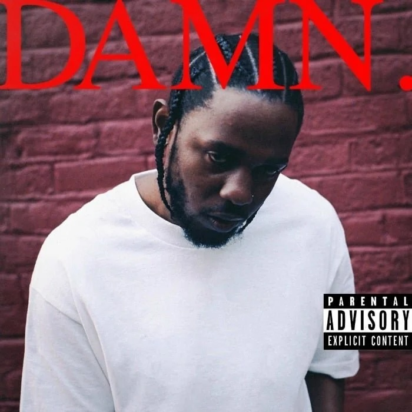

On April 14, 2017, Kendrick Lamar released DAMN., his fourth studio album under Top Dawg Entertainment, Aftermath, and Interscope Records, a 14-track, 55-minute project produced by Sounwave, DJ Dahi, Mike WiLL Made-It, and others. Following To Pimp a Butterfly, this album blends directness with depth, exploring duality and faith. As of March 11, 2025, with its 3x platinum status and Pulitzer win, it’s a defining work—let’s dive in.
The cover—a stark image of Kendrick against a brick wall, photographed by Dave Free and Vlad Sepetov—conveys intensity, mirroring DAMN.’s themes of struggle, redemption, and duality. Tracks like “HUMBLE.” and “DNA.” assert dominance, while “FEAR.” and “LOVE.” delve into vulnerability and romance. It’s a conceptual journey through spirituality and oppression, rich with depth.
Sounwave, DJ Dahi, Mike WiLL Made-It, The Alchemist, and 9th Wonder craft DAMN.’s sound, blending trap, boom-bap, and R&B. “DNA.” hits with a Mike WiLL beat and Fox News sample, “LOVE.” flows with dreamy R&B, and “XXX.” shifts from piano to bass. The dynamic range shines, though some tracks feel uneven.
DAMN. features Rihanna, Zacari, and U2. Rihanna’s vocals on “LOYALTY.” add chemistry, Zacari’s croon on “LOVE.” brings emotion, and U2’s edge on “XXX.” experiments with rock. The features complement Kendrick’s narrative, though some feel underutilized, keeping his voice central.
Kendrick’s path to DAMN. began with Section.80 (2011), followed by good kid, m.A.A.d city (2012) with “Swimming Pools (Drank).” His 2015 To Pimp a Butterfly earned acclaim, while “The Heart Pt. 2” built early buzz. DAMN. blends mainstream appeal with depth, paving the way for Mr. Morale & The Big Steppers (2022).
DAMN. is a 55-minute odyssey of introspective hip-hop, blending Kendrick’s lyrical mastery with dynamic production. Its depth and hits shine, though its accessibility divides fans. As of March 11, 2025, its 3x platinum status and Pulitzer win (2018) affirm its legacy—a must-hear for substance seekers.
Originality (18/20): A bold exploration of duality, rooted in his style.
Production Quality (18/20): Dynamic and polished, with minor inconsistencies.
Lyrics and Messaging (19/20): Profound and introspective, with universal themes.
Enjoyment Factor (17/20): Rewarding for fans, intense for casuals.
Consistency (17/20): Strong narrative, but some tracks lag.
DAMN. is Kendrick’s soul-baring triumph, a fierce meditation on life’s contradictions. It’s not flawless, but its raw power cuts deep. Blast it loud, let the beats rumble, and wrestle with a masterpiece that mirrors both Compton’s streets and a man’s spirit, proving hip-hop can transcend to art.